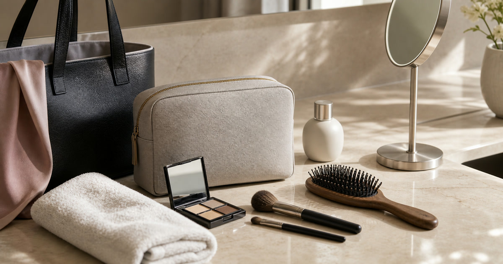

會議前後的整理包：髮品、補妝、香氛與小包怎麼放
會議整理包不是把浴室搬進包裡，而是把會議前五分鐘最常用到的髮品、補妝工具與小包位置排清楚。

真正好用的會議整理包，不是品項最多的那一個，而是你在會議前五分鐘能快速找到的那一個。髮品、補妝、香氛、小毛巾與小包都可能有用，但只要沒有順序，就會變成包內雜訊。本文把整理包拆成儀容摩擦點、拿取頻率、清潔與補貨四個層次，讓通勤包保有空間，也讓會議前後的整理更從容。
先列會議前五分鐘會用到的東西
整理包的第一層，只放真正會在會議前五分鐘拿出來的物件：小鏡子、補妝工具、髮夾或小梳、紙巾與必要的清潔小物。不是每一件好看的用品都該進包。
S′AIME東京企劃、GINGER MAKE UP 與 BAYBEYLA 可以分別放在小包、化妝收納與刷具情境中比較，但妝效、髮品表現與成分限制仍要回商品頁確認。
Elite Fashion 編輯團隊的具體判斷是：整理包的重點是會議前五分鐘能拿到，而不是把浴室搬進包裡。 這讓 S′AIME東京企劃、Apode 歐美專業髮品 與其他選項能被放回同一個生活問題裡比較，而不是只看單一商品照片。
下單前仍要回商品頁確認規格、尺寸、材質、活動、庫存與配送；若資訊不足，先暫緩，比把不確定的物品帶回家更成熟。
- 先確認使用位置與拿取頻率。
- 再看保存、清潔、線材或收納條件。
- 最後才比較品牌、活動與預算。
髮品與補妝不要混在同一層
髮品、刷具、粉餅、唇彩與小毛巾的清潔要求不同。若全部混放，容易讓整理包看起來很滿，真正要拿時卻不好找。
Apode 歐美專業髮品、MORINO 與 UD LAB 可作為髮品、毛巾與小包補充參考；本文不宣稱任何美妝或髮品效果。
Elite Fashion 編輯團隊的具體判斷是：整理包的重點是會議前五分鐘能拿到，而不是把浴室搬進包裡。 這讓 S′AIME東京企劃、Apode 歐美專業髮品 與其他選項能被放回同一個生活問題裡比較，而不是只看單一商品照片。
下單前仍要回商品頁確認規格、尺寸、材質、活動、庫存與配送；若資訊不足，先暫緩，比把不確定的物品帶回家更成熟。
- 先確認使用位置與拿取頻率。
- 再看保存、清潔、線材或收納條件。
- 最後才比較品牌、活動與預算。
Elite 嚴選
香氛是最後一層，不是必要主角
香氛小物可以讓會議前整理更完整，但它應該放在清潔、儀容和衣物狀態之後。若包內空間有限，香氛應該比補妝工具更容易被刪減。
選擇氣味用品時，要看容量、保存方式與使用場合，不把個人喜好寫成所有人都適合的推薦。
Elite Fashion 編輯團隊的具體判斷是：整理包的重點是會議前五分鐘能拿到，而不是把浴室搬進包裡。 這讓 S′AIME東京企劃、Apode 歐美專業髮品 與其他選項能被放回同一個生活問題裡比較，而不是只看單一商品照片。
下單前仍要回商品頁確認規格、尺寸、材質、活動、庫存與配送；若資訊不足，先暫緩，比把不確定的物品帶回家更成熟。
- 先確認使用位置與拿取頻率。
- 再看保存、清潔、線材或收納條件。
- 最後才比較品牌、活動與預算。
小包的尺寸由最大件工具決定
很多人先買小包，再勉強把物品塞進去；更穩的做法，是先放入最大件工具，再決定包款深度和開口。
如果最大件是髮刷或化妝刷，開口就要好拿；如果只是唇彩與小鏡，薄型小包就能降低重量。
Elite Fashion 編輯團隊的具體判斷是：整理包的重點是會議前五分鐘能拿到，而不是把浴室搬進包裡。 這讓 S′AIME東京企劃、Apode 歐美專業髮品 與其他選項能被放回同一個生活問題裡比較，而不是只看單一商品照片。
下單前仍要回商品頁確認規格、尺寸、材質、活動、庫存與配送；若資訊不足，先暫緩，比把不確定的物品帶回家更成熟。
- 先確認使用位置與拿取頻率。
- 再看保存、清潔、線材或收納條件。
- 最後才比較品牌、活動與預算。
台灣通勤情境要多看濕熱與移動
濕熱天氣、機車通勤、捷運擁擠和辦公室冷氣，都會讓整理包的清潔和材質更重要。布面、拉鍊與內袋是否容易擦拭，比漂亮照片更接近日常。
若商品頁沒有清楚標示材質、清潔方式或尺寸，建議先暫緩，不要只靠想像下單。
Elite Fashion 編輯團隊的具體判斷是：整理包的重點是會議前五分鐘能拿到，而不是把浴室搬進包裡。 這讓 S′AIME東京企劃、Apode 歐美專業髮品 與其他選項能被放回同一個生活問題裡比較，而不是只看單一商品照片。
下單前仍要回商品頁確認規格、尺寸、材質、活動、庫存與配送；若資訊不足，先暫緩，比把不確定的物品帶回家更成熟。
- 先確認使用位置與拿取頻率。
- 再看保存、清潔、線材或收納條件。
- 最後才比較品牌、活動與預算。
下單前的整理包清單
把用品分成每日必帶、會議前使用、雨天備案和晚間行程四類。每一類最多留一到兩件，才不會讓整理包變成負擔。
價格、規格、活動、庫存、成分與配送請以下單前商品頁公告為準。
Elite Fashion 編輯團隊的具體判斷是：整理包的重點是會議前五分鐘能拿到，而不是把浴室搬進包裡。 這讓 S′AIME東京企劃、Apode 歐美專業髮品 與其他選項能被放回同一個生活問題裡比較，而不是只看單一商品照片。
下單前仍要回商品頁確認規格、尺寸、材質、活動、庫存與配送；若資訊不足，先暫緩，比把不確定的物品帶回家更成熟。
- 先確認使用位置與拿取頻率。
- 再看保存、清潔、線材或收納條件。
- 最後才比較品牌、活動與預算。
同主題品牌參考
FAQ
會議整理包要放哪些東西？
先放會議前五分鐘會用到的物品，例如小鏡子、補妝工具、簡易髮夾或清潔小物，再依包內空間增減。
髮品和補妝工具可以一起放嗎？
可以放在同一個整理包，但建議分層或分袋，避免清潔需求不同造成混亂。
香氛小物需要必帶嗎？
不一定。香氛應放在最後一層考量，且需看使用場合、容量與個人習慣。
下一步建議
會議整理包應控制品項，先補儀容摩擦點，再看香氛與外觀。 先用本文順序縮小範圍，再回商品頁確認規格、價格、活動與庫存。
重要警語
本文含品牌／商品導購連結；商品資訊、價格、規格、活動與庫存請以商品頁公告為準。不宣稱美妝或髮品效果，成分與使用限制回商品頁。
本文含品牌／商品導購連結；若你透過部分商品連結前往選購，Elite Fashion 可能取得合作收益。本文仍以編輯判斷與使用情境整理為主，價格、規格、活動與庫存請以商品頁公告為準。